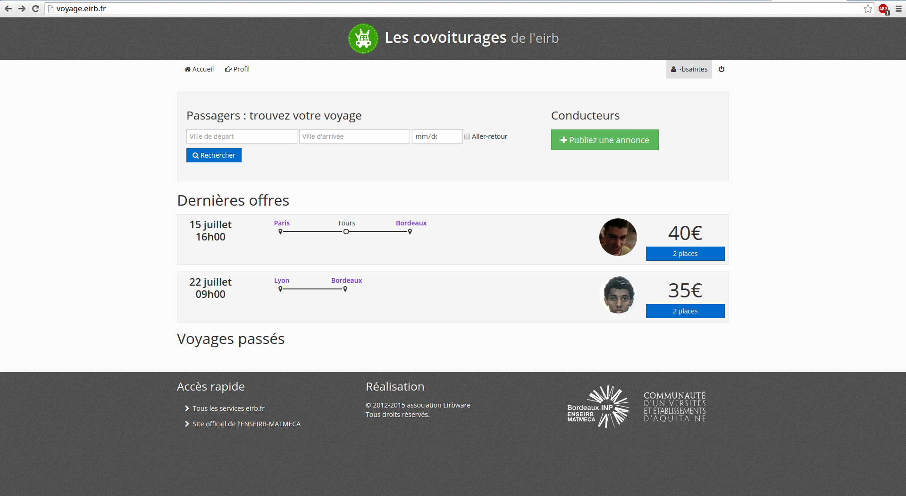
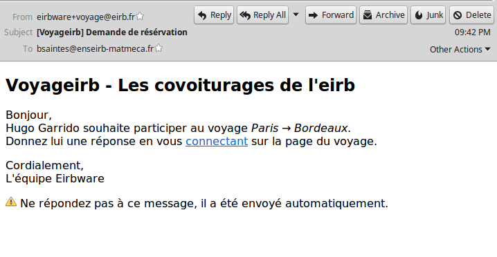
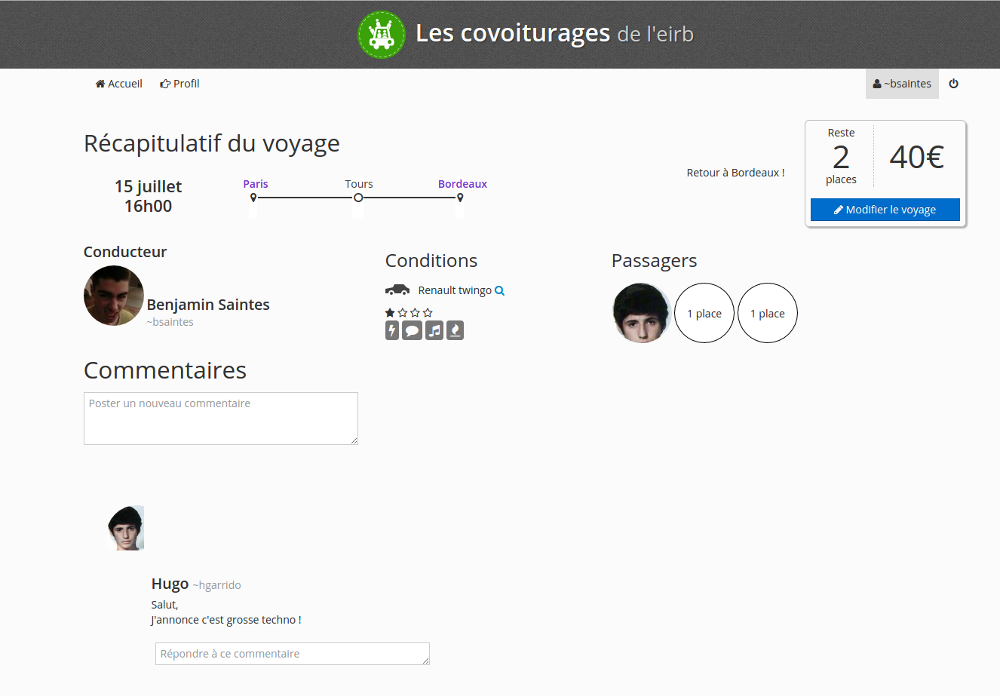
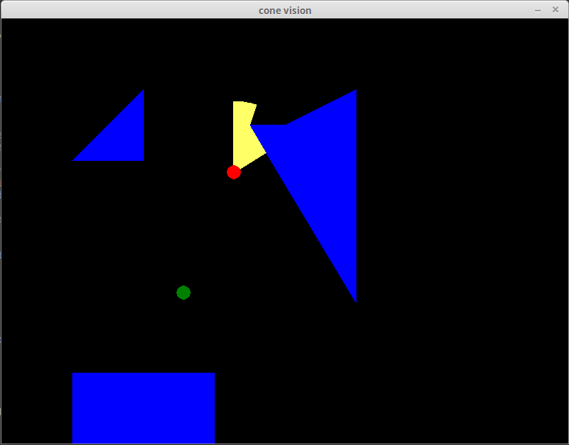
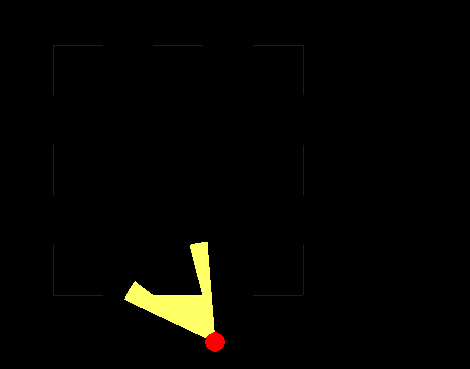
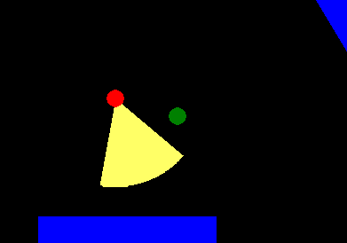
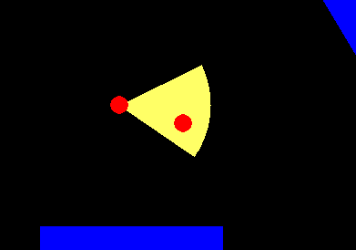
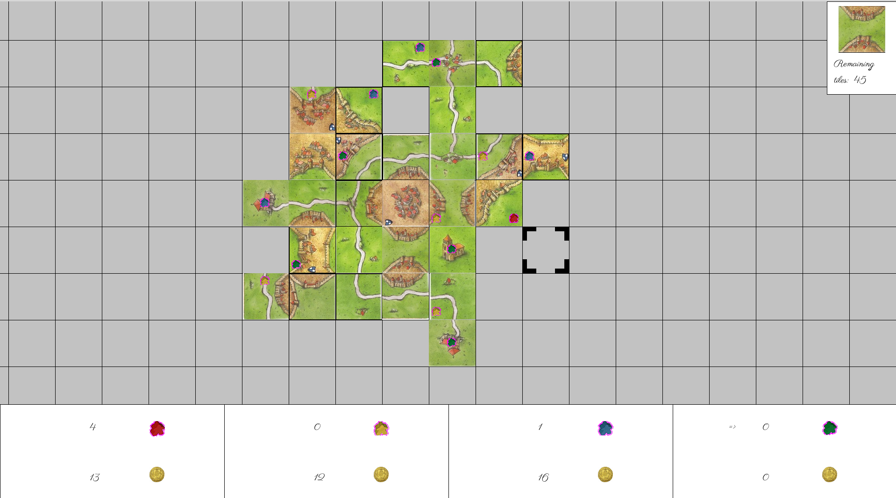
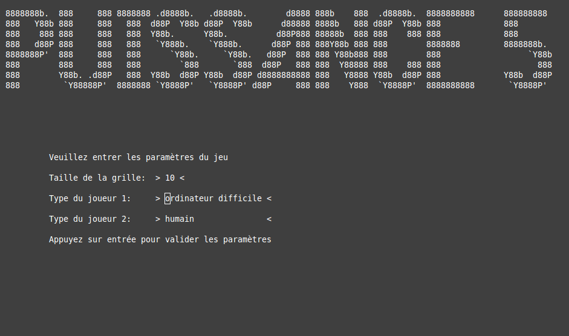
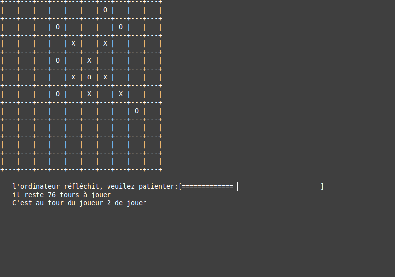

À propos de moi
Projets réalisés durant mon parcours académique
-
Ce projet académique, réalisé en 3ème et dernière année d'école, a été pensé et élaboré par des élèves. Il consiste en un service de cloud relativement semblable à ceux existant aujourd'hui mais avec des dimensions communautaire et de sécurité en plus. Ce service est conçu pour être exploité depuis 3 types de supports différents: un navigateur web, une application mobile et un client lourd.
Les motivations de ce projet étaient de disposer d'un service de cloud, organisable à souhait, permettant de lire son contenu depuis de multiples supports et offrant la possibilité de chiffrer les données avant de les télécharger sur le serveur. Ces grandes ambitions ont surtout été un frein dans sa réalisation d'autant plus que notre équipe était de taille restreinte.
Je me suis personnellement chargé d'établir l'API uniforme de communication du service avec les modules ainsi que de développer l'interface web via un serveur django. J'ai ainsi pu affirmé ma maîtrise des services répartis en modules et du framework django.
-
Voyageirb
Ce projet s'inscrit dans le cadre d'une association de mon école d'ingénieur, Eirbware, dont j'étais membre lors de la 2ème année. Cette association, en plus de proposer de l'aide informatique aux élèves de l'école et un hébergement des sites webs des autres associations, développait des services webs pour les élèves. Elle offrait par exemple un service d'emploi du temps, de trombinoscope ainsi qu'un service d'annales (ce dernier très utile à la condition étudiante !).
Nous avons entrepris avec l'équipe de l'association d'apporter notre pierre à l'édifice en créant un service de covoiturage. Ce site propose, au paiement près, toutes les fonctionnalités d'un site de covoiturage classique: création de voyages, demande et gestion des demandes de participation, publication de commentaires et notation des conducteurs. Nous avons même branché le service de mail de l'architecture mère pour alerter les différents parties d'un voyage des actions des autres.
Je me suis occupé entre autre, des fonctionnalités de demande et approbation/refus de participation aux voyages ainsi que de l'envoi des mails correspondants. Ce projet m'a permis de découvrir les problématiques d'un service web social et de découvrir le framework web django.
   -
Ce projet académique, réalisé au second semestre de 2ème année d'école avec une équipe de 4 personnes, consistait à écrire un programme de partage de fichiers. Il se composait d'un serveur central contenant toutes les méta-informations du réseau ainsi qu'un client permettant de s'y connecter et de demander/partager des contenus.
Le but du projet était d'appréhender les problématiques de communication entre modules et de mettre en application les connaissances théoriques des réseaux abordées durant l'année.
Je me suis occupé pour ma part d'écrire le serveur en C. Il était intéressant d'une part de devoir écrire un programme écoutant et analysant tout ce qu'on lui envoyait sur un certain port mais aussi d'établir une structure de données robuste et performante permettant de stocker l'information contenue dans le réseau.
-
Ce projet est un projet entièrement personnel, réalisé lors de mes soirées alors que j'étais en stage de 1ère année en Écosse. Le but était de mettre au point un environnement de jeu vidéo minimaliste dans lequel on verrait évoluer un personnage du dessus, dont le champ de vision serait limité par l'obscurité et obstrué par des obstacles.
Les motivations de ce projet étaient, d'une part de réaliser un projet en python et ainsi monter en compétences dans ce langage, et d'autre part d'implémenter un algorithme de détermination de champ de vision (idée que je tenais de cet article que j'avais lu à l'époque).
Ce projet a été réalisé de manière un peu rudimentaire, du à mes modestes connaissances d'époque du python et de l'informatique, mais je vous invite tout de même à en télécharger les sources afin d'en expérimenter le résultat.
    -
Carcassonne
Ce projet académique, réalisé au second semestre de 1ère année d'école consistait, avec une équipe de 6 personnes, à écrire un programme en C permettant de jouer au jeu de société Carcassonne. Il était l'occasion d'appliquer nos notions croissantes d'informatique ainsi que d’expérimenter une ambiance de travail dans un groupe de taille assez importante.
Les enjeux de ce projet étaient, d'une part d’établir une interface graphique permettant d'interagir avec le jeu et d'autre part de transcrire les nombreuses et complexes règles du jeu. Notamment, le décompte des points se faisant par le calcul de la longueur des structures complétées, il a fallu mettre en place une structure de graphe avec des algorithmes adéquats pour la parcourir.
Je me suis personnellement occupé de réaliser l'interface graphique et d'y intégrer les modules du jeu. Cette deuxième partie s'est d'ailleurs révélée très intéressante dans la mesure ou elle imposait d'avoir anticipé en amont la structure des modules afin qu'ils s’emboîtent bien ensemble. Cela a représenté un travail d'harmonisation du code mais aussi une synchronisation du travail.
 -
Puissance5
Il était question dans ce projet d'écrire un programme en C permettant de jouer au jeu puissance 5 (genre de morpion sur une grille à taille variable). Ainsi proposer une interface graphique pour y jouer mais aussi vérifier les conditions de victoire/défaite. Une suggestion d'amélioration du projet consistait à permettre au joueur d'affronter des ordinateurs de difficulté croissantes.
Ce projet, bien que de taille restreinte, a été très intéressant dans la mesure où il m'a permis d'appliquer les toutes fraîches notions d'informatique apprises lors du premier semestre d'école, et parce qu'il impliquait différentes notions de programmation telles que l'interface graphique ou l'intelligence artificielle.
J'ai réalisé ce projet tout seul, à l'aide de la librairie ncurses pour l'environnement graphique. Les ordinateurs se basent sur l'algorithme min-max pour décider leurs coups.
 